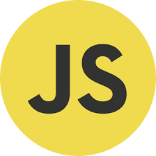
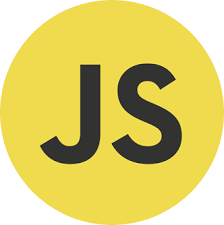
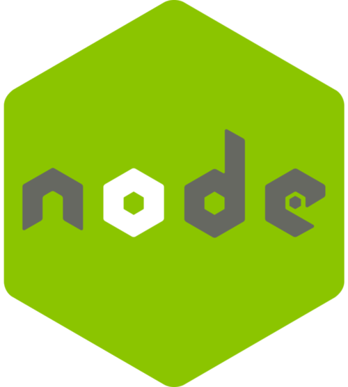
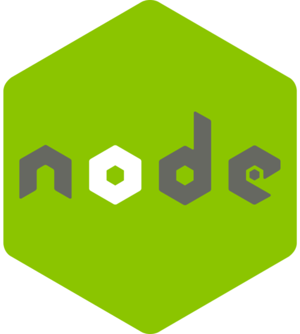

I'm Ashlynn Landry, a 20-something-year-old building a career for myself in Web Development.
Born in Baton Rouge, raised as a Georgia peach, and graduated with a Bachelor of Business Administration in Marketing from the University of Mississippi in May 2020,
my heart lies in many places, primarily with my dog, pottery, and design.
In my previous role as Marketing and Communications Coordinator at Good Samaritan Health Center,
I worked primarily on designing their marketing materials and developing and managing the company's WordPress website.
I quickly developed a love for those responsibilities and knew I wanted to pivot careers to full-time web development.
So, I enrolled in Georgia Institute of Technology's Full Stack Web Development Bootcamp.
I graduated from that 24-week certificate program in December 2022 with a brand new skill set in current industry-backed standards in frontend and backend skills.
With my background in marketing and a love for graphic design, this portfolio showcases the skills I have learned thus far.
I am currently seeking an entry-level position as a Web Developer or Web Designer
so that I may gain real-world experiences and utilize my broad skillset to create visually beautiful and accessible websites and applications.


 



 
